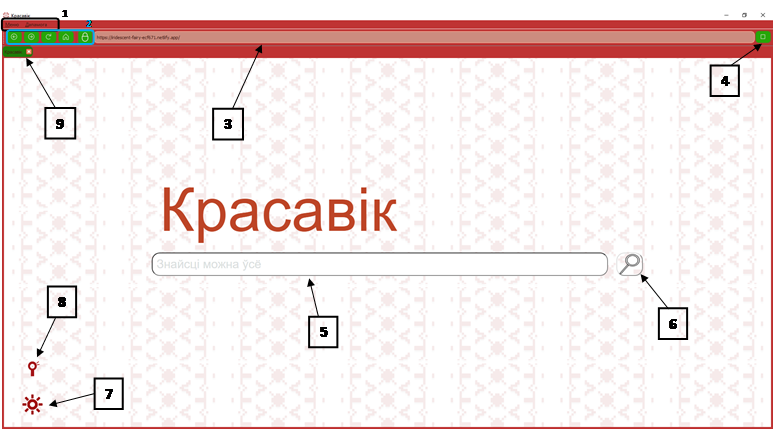

1- Меню, Дапамога
Это выпадающие списки, при нажатии появятся ряд возможностей
2- Кнопки "Назад", "Наперад", "Перезагрузіць", "Дадому"
"Назад" при нажатии вас вернет на предыдущую страницу
"Наперад"при нажатии вас вернет на следующую страницу, работает если была нажата ккнопка "Назад"
"Перезагрузіць" при нажатии перезагружает страницу
"Дадому" при нажатии создает новую вкладку ввиде главной страницы
3- Строка ссылки
Строка, в которой находится ссылка на открытый сайт
4- Кнопка "Прыпынак"
"Прыпынак" - при нажатии останавливает загрузку страницы
5- строка поиска
В этой строке вводится ваш запрос
6- кнопка поиска
Если в строке поиска есть какой-либо запрос, то при нажатии откроется сайт с популярными сайтами по вашему запросу
7- Настройки
При нажатии открывает модальное окно, в котором можно настроить браузер под свои предпочтения
8- Голосовой помощник "Мікіта"
При нажатии появляется голосовой помощник, с помощью которого проще искать информацию и учить язык
9- Действущая вкладка
Здесь показывается на какой вы вкладке и их количество